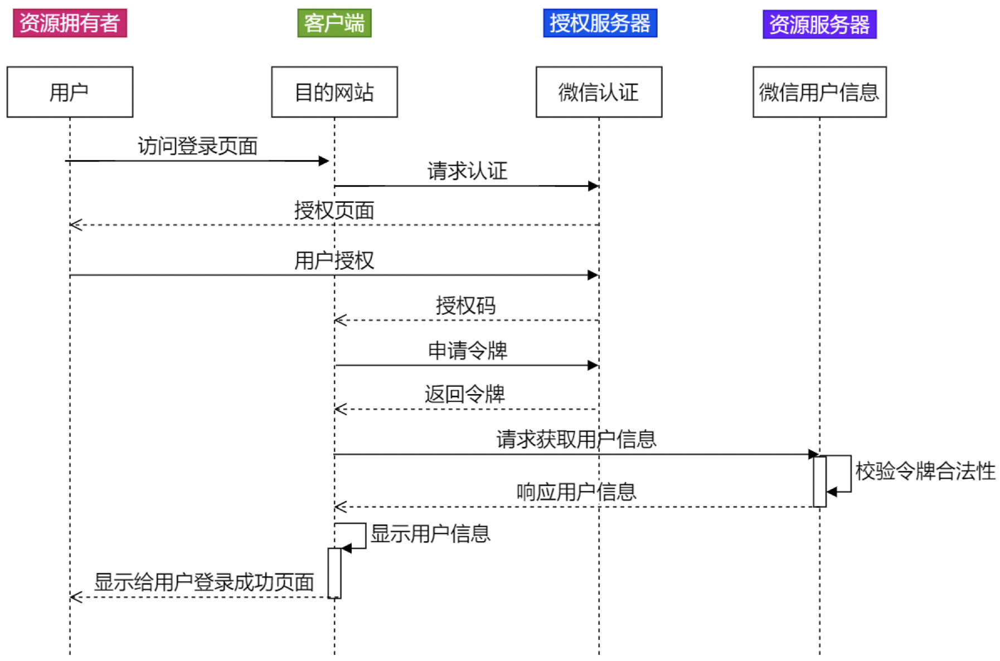
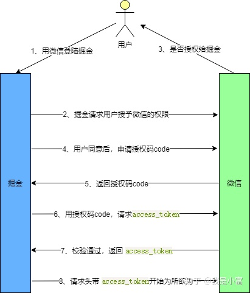
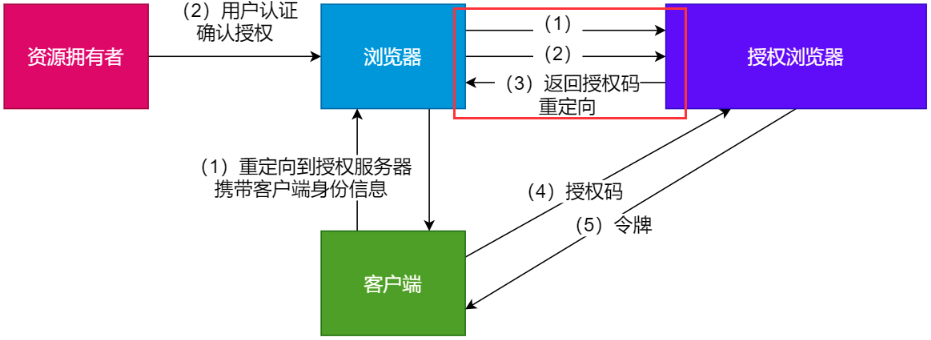
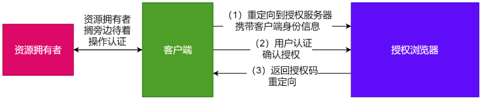
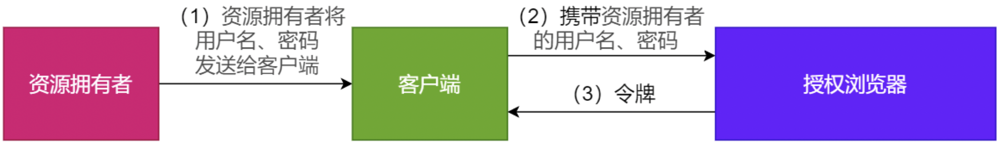
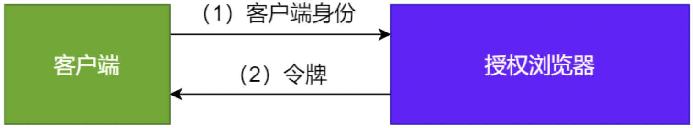
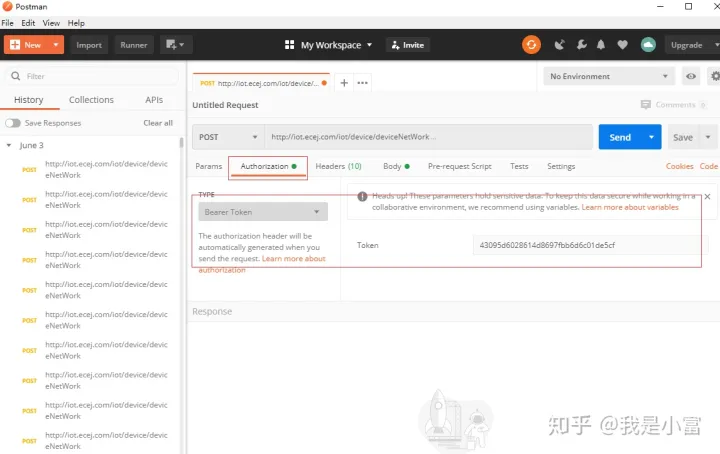

OAuth 2.0 协议
OAuth2.0协议
OAuth2.0 为何物
OAuth 简单理解就是一种授权机制，它是在客户端和资源所有者之间的授权层，用来分离两种不同的角色。在资源所有者同意并向客户端颁发令牌后，客户端携带令牌就可以访问资源所有者的资源。
OAuth2.0 是OAuth 协议的一个版本，有2.0版本那就有1.0版本，有意思的是OAuth2.0 却不向下兼容OAuth1.0 ，相当于废弃了1.0版本。
举个小栗子解释一下什么是 OAuth 授权？
订了个外卖，外卖小哥30秒火速到达了我家楼下，奈何有门禁进不来，可以输入密码进入，但出于安全考虑我并不想告诉他密码。此时外卖小哥看到门禁有一个高级按钮“一键获取授权”，只要我这边同意，他会获取到一个有效期 2小时的令牌（token）正常出入。
令牌（token）和 密码 的作用虽然相似都可以进入系统，但还有点不同。token 拥有权限范围，有时效性的，到期自动失效，而且修改无效。
OAuth2.0中有四个重要角色：
| 角色 | 描述 |
|---|---|
| 客户端 | 本身不存储资源，需要通过资源拥有者的授权去请求资源服务器的资源，常见的就是用户常用的各种客户端，比如：Android客户端、Web客户端（浏览器端）、微信客户端等。 |
| 资源拥有者 | 通常为用户，也可以是应用程序，即该资源的拥有者。 |
| 授权服务器（也称认证服务器） | 用于服务提供商对资源拥有的身份进行认证、对访问资源进行授权，认证成功后会给客户端发放令牌 （access_token），作为客户端访问资源服务器的凭据。本例为微信的认证服务器。 |
| 资源服务器 | 存储资源拥有者所拥有的资源的服务器，比如：微信侧存储的用户信息。 |
拿微信授权其他平台登录为例，该角色在流程中对应关系如下：
OAuth2.0 授权方式
OAuth2.0 的授权简单理解其实就是获取令牌（token）的过程，OAuth 协议定义了四种获得令牌的授权方式（authorization grant ）如下：
- 授权码（authorization-code）
- 隐藏式（implicit）
- 密码式（password）：
- 客户端凭证（client credentials）
但值得注意的是，不管我们使用哪一种授权方式，在三方应用申请令牌之前，都必须在系统中去申请身份唯一标识：客户端 ID（client ID）和 客户端密钥（client secret）。这样做可以保证 token 不被恶意使用。
下面我们会分析每种授权方式的原理，在进入正题前，先了解 OAuth2.0 授权过程中几个重要的参数：
- response_type：code 表示要求返回授权码，token 表示直接返回令牌；
- client_id：客户端身份标识；
- client_secret：客户端密钥；
- redirect_uri：重定向地址（用户同意授权之后，三方应用将返回的信息带回时调用的重定向地址，passport-third中三方登录接口的cap地址）；
- scope：表示授权的范围，read只读权限，all读写权限；
- grant_type：表示授权的方式，AUTHORIZATION_CODE（授权码）、password（密码）、client_credentials（凭证式）、refresh_token 更新令牌；
- state：应用程序传递的一个随机数，用来防止CSRF攻击；
CSRF攻击 | 跨站请求伪造
授权码
OAuth2.0四种授权中授权码方式是最为复杂，但也是安全系数最高的，比较常用的一种方式。这种模式是四种模式中最安全的一种模式。一般用于Web服务器端应用或第三方的原生App调用资源服务的时候。适用于兼具前后端的Web项目，因为有些项目只有后端或只有前端，并不适用授权码模式。
下图我们以用WX登录掘金为例，详细看一下授权码方式的整体流程。
用户选择WX登录掘金，掘金会向WX发起授权请求，接下来 WX询问用户是否同意授权（常见的弹窗授权）。response_type 为 code 要求返回授权码，scope 参数表示本次授权范围为只读权限，redirect_uri 重定向地址。
1 | https://wx.com/oauth/authorize? |
用户同意授权后，WX 根据 redirect_uri重定向并带上授权码。
1 | http://juejin.im/callback?code=AUTHORIZATION_CODE |
当掘金拿到授权码（code）时，带授权码和密匙等参数向WX申请令牌。grant_type表示本次授权为授权码方式 authorization_code ，获取令牌要带上客户端密匙 client_secret，和上一步得到的授权码 code。
1 | https://wx.com/oauth/token? |
最后 WX 收到请求后向 redirect_uri 地址发送 JSON 数据，其中的access_token 就是令牌。
1 | { |
Q：OAuth 2.0为什么不直接返回access_token?要设定为返回auth_code之后再去请求accessToken？
主要出于安全方考虑，防止中间人攻击。假设第三方应用、授权服务不直接通信，中间隔了一层代理。且第三方应用采用HTTP协议，这样恶意代理就能窃取access token。因此，采用了通过code来交换access token的方式，来增加安全性。并且不能将access_token直接给到用户侧，相对于用户侧网络环境的复杂性，第三方应用自身服务端的网络环境相对更安全。
特别注意：对于授权码和access_token的篡改，在OAuth 1.0中是反复的对Code和Token进行签名，来保证Token不会被篡改，但是OAuth 2.0中却没有，因为OAuth 2.0是基于Https的，所以如果没有Https的支持OAuth 2.0可能还不如OAuth 1.0。在 OAuth 2.0 中，使用 HTTPS 可以说是必须的，而且 client 有义务验证证书的真假，防止中间人攻击，而 authorization server 和 resource server 都有义务申请可信任的第三方颁发的真实的 SSL 证书。
隐藏式（简化模式）
授权码模式：
简化版的授权码模式，跳过临时授权码的环节，只要用户一点击授权，就能直接返回access_token，而不是通过授权码code再次去获取。
参数描述同授权码模式 ，注意response_type=token，说明是简化模式。
上边提到有一些Web应用是没有后端的， 属于纯前端应用，无法用上边的授权码模式。令牌的申请与存储都需要在前端完成，跳过了授权码这一步。
前端应用直接获取 token，response_type 设置为 token，要求直接返回令牌，跳过授权码，WX授权通过后重定向到指定 redirect_uri 。
1 | https://wx.com/oauth/authorize? |
密码式
密码模式比较好理解，用户在掘金直接输入自己的WX用户名和密码，掘金拿着信息直接去WX申请令牌，请求响应的 JSON结果中返回 token。grant_type 为 password 表示密码式授权。
1 | https://wx.com/token? |
这种授权方式简单，但是却意味着直接将用户敏感信息泄漏给了client，因此这就说明这种模式只能用于client是我们自己开发的情况下，或者第一方原生APP或第一方单页面应用。
客户端凭证式
凭证式和密码式很相似，主要适用于那些没有前端的命令行应用，可以用最简单的方式获取令牌，在请求响应的 JSON 结果中返回 token。
grant_type 为 client_credentials 表示凭证式授权，client_id 和 client_secret 用来识别身份。
1 | https://wx.com/token? |
令牌的使用与更新
1、令牌怎么用？
拿到令牌可以调用 WX API 请求数据了，那令牌该怎么用呢？
每个到达WX的请求都必须带上 token，将 token 放在 http 请求头部的一个Authorization字段里。
如果使用postman 模拟请求，要在Authorization -> Bearer Token 放入 token，注意：低版本postman 没有这个选项。

2、令牌过期怎么办？
token是有时效性的，一旦过期就需要重新获取，但是重走一遍授权流程，不仅麻烦而且用户体验也不好，那如何让更新令牌变得优雅一点呢？
一般在颁发令牌时会一次发两个令牌，一个令牌用来请求API，另一个负责更新令牌 refresh_token。grant_type 为 refresh_token 请求为更新令牌，参数 refresh_token 是用于更新令牌的令牌。
1 | https://wx.com/oauth/token? |
3、令牌的维护
因为各大三方开放平台，比如：支付宝、微信等等，access_token的特点是重复请求获取会刷新，每次请求获取access_token得到的都是不同的值，所以一般实际开发中，针对access_token会集中进行维护和管理，避免在多个应用中使用时会出现重新请求获取access_token导致旧access_token过期，从而三方业务请求失败，这种场景就是常说的：共享token问题。在实际开发中应尽量避免，因为一旦发生排查起来会很困难。
参考文档：
 微信
微信